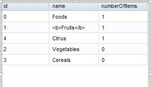

Widget palette Dojo DataGrid tests (Legacy)
Introduction
With the addition of GridX support, Maqetta support for DataGrid has been deprecated. As part of the
deprecation, DataGrid has been hidden within the widget palette. However, existing files containing
DataGrid should continue to function, and DataGrid Smart Input should continue to behave as before. So, this
DataGrid test plan stays mostly the same except instead of dragging DataGrid from palette to canvas, DataGrid
will need to be added to HTML files via the source editor.
Creating File Containing Data Grid
Steps
- Choose New HTML File from the New menu
- Click "Split Vertically" or "Split Horizontally" in main toolbar to make source pane visible
- Copy and paste the source from dataGridLegacySample.html on top of the source in the source pane
- See DataGrid get rendered and close source pane (e.g., click "Display Design" in main toolbar).
Expected results
- The DataGrid should be rendered in the page editor with default data.
Comma separated data
Steps
- Continuing with HTML file created in last section.
- Double-click on the DataGrid to bring up SmartInput.
- SmartInput is displayed chose Comma separated data from the drop down list
- Change the data in the text area to:
- one, two, three
- data 1, data 2, data 3
- xxxx, yyy, zzz
- 111, 222, 3333
- Click in the canvas area of the window to cause a blur event that will close the window.
- The DataGrid should be updated with the data you entered.
- Save and close the file.
- Reopen the file
- Click on the preview icon in the toolbar, this should open a new browser window and the data grid should be displayed with the data entered
Expected results
- The DataGrid in page editor and preview should be displaying the data you just enter.
- You should see 3 columns with the headers one, two and three.
- You should see 3 rows of data, corresponding to the data you entered.
Smart Input
Steps
- Choose New HTML File from the New menu
- Add DataGrid to file using instructions in Creating File Containing Data Grid section above
- Double-click on the DataGrid to bring up SmartInput.
- SmartInput is displayed, mouse down and hold on the icon in the button right corner of the text area. Drag to re-size the the smart input.
- Click on the ? icon to display the help.
- Click on the ? icon to hide the help.
- Mouse down and hold in the area between the ? icon and the Ok and Cancel buttons. drag the smart input box around the canvas area.
Expected results
- The user should be able to re-size the smart input box, move the box around the canvas,
display and hide help. When the user moves the smart input box the pointer should disappear
from the top left of the smart input box..
HTML detection in comma separated data
Steps
- Choose New HTML File from the New menu
- Add DataGrid to file using instructions in Creating File Containing Data Grid section above
- Double-click on the DataGrid to bring up SmartInput.
- SmartInput is displayed chose Comma separated data from the drop down list
- Change the data in the text area to:
- one, two, three
- data 1, <b>data 2</b>, data 3
- xxxx, yyy, zzz
- 111, 222, 3333
- Two radio buttons should now be displayed Plan Text and HTML Markup, Chose the HTML Markup radio.
- Click the Cancel button.
- The DataGrid should be be displayed with the default data, not the data you entered.
- Save and close the file.
- Reopen the file
- Click on the preview icon in the toolbar, this should open a new browser window and the data grid should be displayed with the default data.
Expected results
- The DataGrid in page editor and preview should be displaying the default data.

Data file from workspace
Steps
- Choose New HTML File from the New menu
- Add DataGrid to file using instructions in Creating File Containing Data Grid section above
- Double-click on the DataGrid to bring up SmartInput.
- SmartInput is displayed chose Data file from workspace from the drop down list
- Click on the folder icon.
- The select a source dialog will be displayed, navigate to the sample_data folderand then select the htmlSample.json< file. Click the OK button
- The text area should now display the text sample_data/htmlSample.json.
Two radio button should also now be displayed under the text area labeled Plain text and HTML markup<
select the Plain text
- Click the ok button.
- The DataGrid should be updated with the data from the htmlSample file. Notice that the data is displayed as plan text, for example <b>Fruits</b>
- Save and close the file.
- Reopen the file
- Click on the preview icon in the toolbar, this should open a new browser window and the data grid should be displayed with the data from the file.
Expected results
- The DataGrid in page editor and preview should be displaying the data from the file.

Data from URL (JSONP)
Steps
- Continuing from the test case above, open the HTML File from the Data from workspace< test case.
- Double click on the DataGrid Widget in the design view to display the smart input.
- SmartInput is displayed chose Data from URL (JSONP) from the drop down list
- In the text area enter the url http://maqettaservice.appspot.com/sampleservice Two radio button should also now be displayed under the text area labeled
Plain text and HTML markup select the HTML markup
- Click the ok button.
- The DataGrid should be updated with the data from the service. Notice that the data is displayed as supports html mrkup , for example Fruits
- Save and close the file.
- Reopen the file
- Click on the preview icon in the toolbar, this should open a new browser window and the data grid should be displayed with the data from the service.
Expected results
- The DataGrid in page editor and preview should be displaying the data from the file.